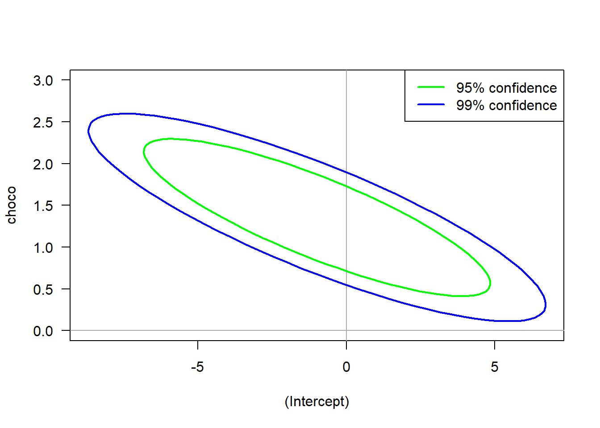

# Read in Table
dat = read.table("data/chocoTable.r");
# Plot data
plot(
dat$choco, dat$nobel,
xlab="Chocolate Consumption (kg per capita)",
ylab="Nobel prizes per 10 million",
las=1,#xlim=c(0,max(dat$choco)+1),
ylim=c(-1,max(dat$nobel))
);
# Label data
text(
x=dat$choco, y=dat$nobel,
labels=dat$abbrev,
pos=1,cex=0.7
)
# Construct a linear model
lmDat = lm( nobel ~ choco, data = dat );
# plot regression line
abline(lmDat,col='blue',lwd=2)1 Ordinary Least Squares
1.1 Introduction
Linear regression begins with the simple but profound idea that some observed output or {response} variable, \(Y\in\mathbb{R}\), is a function of \(p\) input or regressor variables \(x_1,\ldots,x_p\) with the addition of some unknown noise variable \(\varepsilon\). Namely, \[ Y = f(x_1,\ldots,x_p) + \varepsilon \] where the noise is generally assumed to have mean zero and finite variance. The function \(f\) is unknown and relates the inputs \(x_i\) to the output \(Y\). Our goal is to ascertain what \(f\) could be.
In this setting, \(Y\) is usually considered to be a random variable while the \(x_i\) are considered fixed. Hence, the expected value of \(Y\) is in terms of the unknown function \(f\) and the regressors: \[ \mathrm{E}\left(Y\middle|x_1,\ldots,x_p\right) = f(x_1,\ldots,x_p). \] While \(f\) can be considered to be in some very general classes of functions, we begin with the standard linear setting. Let \(\beta_0,\beta_1,\ldots,\beta_p\in\mathbb{R}\). Then, the multiple regression model is \[ Y = \beta_0 + \beta_1 x_1 + \ldots + \beta_p x_p + \varepsilon = {\beta}^\mathrm{T} X + \varepsilon \] where \(\beta = {(\beta_0,\ldots,\beta_p)}^\mathrm{T}\) and \(X = {(1,x_1,\ldots,x_p)}^\mathrm{T}\). The simple regression model is a submodel of the above where \(p=1\), which is \[ Y = \beta_0 + \beta_1 x_1 + \varepsilon, \] and will be treated concurrently with multiple regression.
In the statistics setting, the parameter vector \(\beta\in\mathbb{R}^p\) is unknown. The analyst observes multiple replications of regressor and response pairs, \((X_1,Y_1),\ldots,(X_n,Y_n)\) where \(n\) is the sample size, and wishes to choose a best estimate for \(\beta\) based on these \(n\) observations. This setup can be concisely written in a vector-matrix form as \[ Y = X\beta + \varepsilon \tag{1.1}\] where \[ Y = \begin{pmatrix} Y_1 \\ \vdots \\ Y_n \end{pmatrix},~~~~ X = \begin{pmatrix} 1 & x_{1,1} & \ldots & x_{1,p} \\ 1 & x_{2,1} & \ldots & x_{2,p} \\ \vdots & \vdots & \ddots & \vdots \\ 1 & x_{n,1} & \ldots & x_{n,p} \end{pmatrix},~~~~ \beta = \begin{pmatrix} \beta_0 \\ \vdots \\ \beta_p \end{pmatrix},~~~~ \varepsilon= \begin{pmatrix} \varepsilon_1 \\ \vdots \\ \varepsilon_n \end{pmatrix}. \] Note that \(Y,\varepsilon\in\mathbb{R}^n\), \(\beta\in\mathbb{R}^{p+1}\), and \(X\in\mathbb{R}^{n\times {(p+1)}}\).
As \(Y\) is a random variable, we can compute its mean vector and covariance matrix as follows: \[ \mathrm{E}Y = \mathrm{E}\left( X\beta +\varepsilon\right) = X\beta \] and \[ \mathrm{Var}\left(Y\right) = \mathrm{E}\left( (Y-X\beta){(Y-X\beta)}^\mathrm{T} \right) = \mathrm{E}\left( \varepsilon{\varepsilon}^\mathrm{T} \right) = \mathrm{Var}\left( \varepsilon\right) = \sigma^2I_n. \]
An example of a linear regression is this following study from the New England Journal of Medicine1 can be found in the code below. This study highlights the correlation between chocolate consumption and Nobel prizes received in 16 different countries.
1.1.1 Definitions
Before continuing, we require the following collection of terminology.
The response \(Y\) and the regressors \(X\) were already introduced above. These elements comprise the observed data in our regression. The noise or error variable is \(\varepsilon\). The entries in this vector are usually considered to be independent and identically distributed (iid) random variables with mean zero and finite variance \(\sigma^2 < \infty\). Very often, this vector will be assumed to have a multivariate normal distribution: \(\varepsilon\sim\mathcal{N}\left({ 0},\sigma^2 I_n\right)\) where \(I_n\) is the \(n\times n\) identity matrix. The variance \(\sigma^2\) is also generally considered to be unknown to the analyst.
The unknown vector \(\beta\) is our parameter vector. Eventually, we will construct an estimator \(\hat{\beta}\) from the observed data. Given such an estimator, the fitted values are \(\hat{Y} := X\hat{\beta}\). These values are what the model believes are the expected values at each regressor.
Given the fitted values, the residuals are \(r = Y-\hat{Y}\) which is a vector with entries \(r_i = Y_i - \hat{Y}_i\). This is the difference between the observed response and the expected response of our model. The residuals are of critical importance to testing how good our model is and will reappear in most subsequent sections.
| Known | Unknown | |
|---|---|---|
| Fixed | \(X\) | \(\beta\) |
| Random | \(Y\) | \(\varepsilon\) |
Lastly, there is the concept of sum of squares. Letting \(\bar{Y} = n^{-1}\sum_{i=1}^nY_i\) be the sample mean for \(Y\), the total sum of squares is \(SS_\text{tot} = \sum_{i=1}^n(Y_i-\bar{Y})^2\), which can be thought of as the total variation of the responses. This can be decomposed into a sum of the explained sum of squares and the residual sum of squares as follows: \[ SS_\text{tot} = SS_\text{exp} + SS_\text{res} = \sum_{i=1}^n (\hat{Y}_i-\bar{Y})^2 + \sum_{i=1}^n (Y_i-\hat{Y}_i)^2. \] The explained sum of squares can be thought of as the amount of variation explained by the model while the residual sum of squares can be thought of as a measure of the variation that is not yet contained in the model. The sum of squares gives us an expression for the so called coefficient of determination, \(R^2 = SS_\text{exp}/SS_\text{tot} = 1-SS_\text{res}/SS_\text{tot}\in[0,1]\), which is treated as a measure of what percentage of the variation is explained by the given model.
1.2 Point Estimation
In the ordinary least squares setting, the our choice of estimator is \[ \hat{\beta} = \underset{\tilde{\beta}\in\mathbb{R}^p}{\arg\min} \sum_{i=1}^n( Y_i - X_{i,\cdot}\cdot\tilde{\beta} )^2 \tag{1.2}\] where \(X_{i,\cdot}\) is the \(i\)th row of the matrix \(X\). In the simple regression setting, this reduces to \[ (\hat{\beta}_0,\hat{\beta}_1) = \underset{(\tilde{\beta}_0,\tilde{\beta}_1)\in\mathbb{R}^2}{\arg\min} \sum_{i=1}^n( Y_i - (\tilde{\beta}_0 + \tilde{\beta}_1x_i) )^2. \] Note that this is equivalent to choosing a \(\hat{\beta}\) to minimize the sum of the squared residuals.
It is perfectly reasonable to consider other criterion beyond minimizing the sum of squared residuals. However, this approach results in an estimator with many nice properties. Most notably is the Gauss-Markov theorem:
Theorem 1.1 (Gauss-Markov Theorem) Given the regression setting from Equation 1.1 and that for the errors, \(\mathrm{E}\varepsilon_i = 0\) for \(i=1,\ldots,n\), \(\mathrm{Var}\left(\varepsilon_i\right) = \sigma^2\) for \(i=1,\ldots,n\), and \(\mathrm{cov}\left(\varepsilon_i,\varepsilon_j\right) = 0\) for \(i\ne j\), then the least squares estimator results in the minimal variance over all linear unbiased estimators.
(This is sometimes referred to as the Best Linear Unbiased Estimator or BLUE)
Hence, it can be shown that the estimator is unbiased, \(\mathrm{E}\hat{\beta} = \beta\). Furthermore, as long as the model contains an intercept term \(\beta_0\), the constructed least squares line passes through the centre of the data in the sense that the sum of the residuals is zero, \(\sum_{i=1}^n r_i = 0\) and that \(\bar{Y} = \hat{\beta}\bar{X}\) where \(\bar{Y} = n^{-1}\sum_{i=1}^n Y_i\) is the sample mean of the \(Y_i\) and where \(\bar{X}\) is the vector of column means of the matrix \(X\).
1.2.1 Derivation of the OLS estimator
The goal is to derive an explicit solution to Equation 1.2. First, consider the following partial derivative: \[\begin{align*} \frac{\partial}{\partial \hat{\beta}_k} \sum_{i=1}^n(Y_i-X_{i,\cdot}\cdot\hat{\beta})^2 &= -2\sum_{i=1}^n(Y_i-X_{i,\cdot}\cdot\hat{\beta})X_{i,k}\\ &= -2\sum_{i=1}^n( Y_i-{\textstyle \sum_{j=1}^{p+1} X_{i,j}\hat{\beta}_j} )X_{i,k}\\ &= -2\sum_{i=1}^n Y_iX_{i,k} +2\sum_{i=1}^n\sum_{j=1}^{p+1} X_{i,j}X_{i,k}\hat{\beta}_j \end{align*}\] The above is the \(k\)th entry in the vector \(\nabla \sum_{i=1}^n(Y_i-X_{i,\cdot}\hat{\beta})^2\). Hence, \[ \nabla \sum_{i=1}^n(Y_i-X_{i,\cdot}\hat{\beta})^2 = -2 {X}^\mathrm{T}Y + 2{X}^\mathrm{T}X\hat{\beta}. \] Setting this equal to zero results in a critical point at \[ {X}^\mathrm{T}Y = {X}^\mathrm{T}X\hat{\beta} \] or \(\hat{\beta} = ({X}^\mathrm{T}X)^{-1}{X}^\mathrm{T}Y\) assuming \({X}^\mathrm{T}X\) is invertible. Revisiting the terminology in the above definitions sections gives the following table:
| Object | Formula |
|---|---|
| Least Squares Estimator: | \(\hat{\beta} = ({X}^\mathrm{T}X)^{-1}{X}^\mathrm{T}Y\) |
| Fitted Values: | \(\hat{Y} = X\hat{\beta}=X({X}^\mathrm{T}X)^{-1}{X}^\mathrm{T}Y\) |
| Residuals: | \(r = Y-\hat{Y} = (I_n - X({X}^\mathrm{T}X)^{-1}{X}^\mathrm{T})Y\) |
In the case that \(n>p\) and that the columns of \(X\) are linearly independent, the matrix \(P_X:=X({X}^\mathrm{T}X)^{-1}{X}^\mathrm{T}\) is a rank \(p+1\) projection matrix. Similarly, \(I_n-P_X\) is the complementary rank \(n-p-1\) projection matrix. Intuitively, this implies that the fitted values are the projection on the observed values onto a \(p\)-dimensional subspace while the residuals arise from a projection onto the orthogonal subspace. As a result, it can be shown that \(\mathrm{cov}\left(\hat{Y},r\right) = 0\).
Now that we have an explicit expression for the least squares estimator \(\hat{\beta}\), we can show that it is unbiased. \[ \mathrm{E}\hat{\beta} = \mathrm{E}\left(({X}^\mathrm{T}X)^{-1}{X}^\mathrm{T}Y\right) = ({X}^\mathrm{T}X)^{-1}{X}^\mathrm{T}\mathrm{E}Y = ({X}^\mathrm{T}X)^{-1}{X}^\mathrm{T} X\beta = \beta. \] Following that, we can compute its variance. \[\begin{align*} \mathrm{Var}\left(\hat{\beta}\right) &= \mathrm{E}\left( (\hat{\beta}-\beta){(\hat{\beta}-\beta)}^\mathrm{T} \right)\\ &= \mathrm{E}\left( \hat{\beta}{\hat{\beta}}^\mathrm{T} \right) - \beta{\beta}^\mathrm{T}\\ &= \mathrm{E}\left( ({X}^\mathrm{T}X)^{-1}{X}^\mathrm{T}Y{(({X}^\mathrm{T}X)^{-1}{X}^\mathrm{T}Y)}^\mathrm{T} \right) - \beta{\beta}^\mathrm{T}\\ &= ({X}^\mathrm{T}X)^{-1}{X}^\mathrm{T}\mathrm{E}\left( Y{Y}^\mathrm{T} \right)X({X}^\mathrm{T}X)^{-1} - \beta{\beta}^\mathrm{T}\\ &= ({X}^\mathrm{T}X)^{-1}{X}^\mathrm{T} ( \sigma^2I_n + X\beta{\beta}^\mathrm{T}{X}^\mathrm{T} ) X({X}^\mathrm{T}X)^{-1} - \beta{\beta}^\mathrm{T}\\ &= \sigma^2({X}^\mathrm{T}X)^{-1}. \end{align*}\]
Thus far, we have only assumed that \(\varepsilon\) is a random vector with iid entries with mean zero and variance \(\sigma^2\). If in addition, we assumed that \(\varepsilon\) has a normal or Gaussian distribution, then \[ \varepsilon\sim\mathcal{N}\left(0,\sigma^2I_n\right),~~ Y\sim\mathcal{N}\left(X\beta,\sigma^2I_n\right),\text{ and } \hat{\beta}\sim\mathcal{N}\left(\beta,\sigma^2({X}^\mathrm{T}X)^{-1}\right). \] Furthermore, with a little work, one can show that for the fitted values and residuals also have normal distributions in this setting: \[ \hat{Y}\sim\mathcal{N}\left(X\hat{\beta},\sigma^2P_X\right),~\text{ and }~ r\sim\mathcal{N}\left(0,\sigma^2(I_n-P_X)\right). \] Notice that the two above covariance matrices are not generally of full rank. This assumption that the errors follow a normal distribution is a very common assumption to make in practice.
1.2.2 Maximum likelihood estimate under normality
In the previous section, the OLS estimator is derived by minimizing the sum of the squared errors. Now, given the additional assumption that the errors have a normal distribution, we can compute an alternative estimator for \(\beta\): the maximum likelihood estimate (MLE). We can also use this to simultaneously compute the MLE for \(\sigma^2\).
From above we have that \(Y\sim\mathcal{N}\left(X\beta,\sigma^2I_n\right)\), and hence the likelihood is \[\begin{align*} L(\beta,\sigma^2; X,Y) &= (2\pi\sigma^2)^{-n/2}\exp\left( -\frac{1}{2\sigma^2}{(Y-X\beta)}^\mathrm{T}(Y-X\beta) \right). \end{align*}\] The log likelihood is then \[\begin{multline*} \ell(\beta,\sigma^2;X,Y) = \log L(\beta,\sigma^2;X,Y) =\\= -\frac{n}{2}\log 2\pi -\frac{n}{2}\log \sigma^2 -\frac{1}{2\sigma^2}{(Y-X\beta)}^\mathrm{T}(Y-X\beta). \end{multline*}\] This implies that the MLE for \(\beta\) comes from solving \[ 0 = \frac{\partial\ell}{\partial\beta} = \frac{\partial}{\partial\beta} {(Y-X\beta)}^\mathrm{T}(Y-X\beta), \] which is solved by the OLS estimator from above. Hence, the MLE under normality is the least squares estimator.
For the variance term \(\sigma^2\), the MLE is similarly found by solving \[
0= \frac{\partial\ell}{\partial\sigma^2} =
-\frac{n}{2} (\sigma^{2})^{-1}
+\frac{(\sigma^2)^{-2}}{2}{(Y-X\beta)}^\mathrm{T}(Y-X\beta).
\] This occurs for \(\hat{\sigma}^2 = n^{-1}{(Y-X\hat{\beta})}^\mathrm{T}(Y-X\hat{\beta})\), which is just the average sum of squares of the residuals: \(\hat{\sigma}^2 = n^{-1}\sum_{i=1}^n r_i^2\). However, this is a biased estimator of the variance as the residuals are not independent and have a degenerate covariance matrix of rank \(n-p-1\). Intuitively, this implies that the sum of squared residuals has \(n-p-1\) degrees of freedom resulting in \[
\frac{SS_\text{res}}{\sigma^2} = \frac{1}{\sigma^2}\sum_{i=1}^n r_i^2
\sim\chi^2\left(n-p-1\right)
\] and the unbiased estimator of \(\sigma^2\) being \(SS_\text{res}/(n-p-1) = \hat{\sigma}^2(n/(n-p-1))\).
For a more precise explanation of where this comes from, see Cochran’s Theorem which is beyond the scope of this course.
1.2.2.1 Chocolate-Nobel Data
Running a regression in R on the chocolate consumption vs Nobel prize data from above results in a fitted model \[ (\text{Nobel Prizes}) = -0.991 + 1.3545(\text{Chocolate}) \] This indicates that a 1 kg increase in chocolate consumption per capita corresponds to an expected increase in 1.35 Nobel prizes per 10 million people.
# Read in Table
dat = read.table("data/chocoTable.r");
# Construct a linear model
lmDat = lm( nobel ~ choco, dat=dat );
# print summary of model
summary(lmDat);
Call:
lm(formula = nobel ~ choco, data = dat)
Residuals:
Min 1Q Median 3Q Max
-6.6876 -1.6504 -0.5288 0.1484 11.3922
Coefficients:
Estimate Std. Error t value Pr(>|t|)
(Intercept) -0.9910 2.1327 -0.465 0.64932
choco 1.3545 0.3446 3.931 0.00151 **
---
Signif. codes: 0 '***' 0.001 '**' 0.01 '*' 0.05 '.' 0.1 ' ' 1
Residual standard error: 4.666 on 14 degrees of freedom
Multiple R-squared: 0.5246, Adjusted R-squared: 0.4907
F-statistic: 15.45 on 1 and 14 DF, p-value: 0.0015081.2.3 Proof of the Gauss-Markov Theorem
Proof. Any linear estimator can be written as \(AY\) for some non-random matrix \(A\in\mathbb{R}^{(p+1)\times n}\). We can in turn write \(A = ({X}^\mathrm{T}X)^{-1}{X}^\mathrm{T}+D\) for some matrix \(D\in\mathbb{R}^{(p+1)\times n}\). Then, as \[\begin{align*} \mathrm{E}\left( AY \right) &= AX\beta \\ &= \left[({X}^\mathrm{T}X)^{-1}{X}^\mathrm{T}+D\right]X\beta \\ &= \beta + DX\beta, \end{align*}\] the unbiased condition implies that \(DX\beta=0\) for any \(\beta\in\mathbb{R}^{p+1}\) and hence that \(DX=0\).
Next, we compute the variance of the arbitrary linear unbiased estimator to get \[\begin{align*} \mathrm{Var}\left(AY\right) &= A\mathrm{Var}\left(Y\right){A}^\mathrm{T}\\ &=\sigma^2\left[ ({X}^\mathrm{T}X)^{-1}{X}^\mathrm{T}+D \right]{\left[ ({X}^\mathrm{T}X)^{-1}{X}^\mathrm{T}+D \right]}^\mathrm{T}\\ &= \sigma^2\left[ ({X}^\mathrm{T}X)^{-1} + ({X}^\mathrm{T}X)^{-1}{X}^\mathrm{T}{D}^\mathrm{T} + DX({X}^\mathrm{T}X)^{-1} + D{D}^\mathrm{T} \right] \\ &= \sigma^2\left[ ({X}^\mathrm{T}X)^{-1} + D{D}^\mathrm{T} \right]. \end{align*}\] Hence, to minimize the variance, we must minimize \(D{D}^\mathrm{T}\) as \(D{D}^\mathrm{T}\) is necessarily a positive semi-definite matrix. This is achieved by setting \(D=0\) and arriving at \(({X}^\mathrm{T}X)^{-1}{X}^\mathrm{T}Y\) having minimial variance.
Remark 1.1. Note that \(D{D}^\mathrm{T}\) is positive semi-definite for any choice of \(D\) as for any \(w\in\mathbb{R}^{p+1}\), we have \[ {w}^\mathrm{T}(D{D}^\mathrm{T}){w} = {({D}^\mathrm{T}w)}^\mathrm{T}(Dw) = \lVert Dw\rVert_2 \ge 0. \]
Remark 1.2. While \(\hat{\beta}\) has minimal variance over all unbiased estimators, we can lessen the variance further if we allow for biased estimators. This is considered in many more advanced regression methods such as ridge regression and lasso.
1.3 Hypothesis Testing
1.3.1 Goodness of fit
We now have a model for our data, and in some sense, this model is optimal as it minimizes the squared errors. However, even being optimal, we are still interested in knowing whether or not this is a good model for our data. This is a question of goodness of fit.
The first question to ask is, do any of the regressors provide information about the response in the linear model framework? This can be written mathematically as \[ H_0: \beta_1 = \ldots = \beta_p = 0, ~~~~~ H_1: \exists i\ge1~s.t.~\beta_i\ne0, \tag{1.3}\] which is asking is there at least one \(\beta_i\) that we can claim is non-zero and hence implies that the regressor \(x_i\) has some nontrivial influence over \(y\).
To test this hypothesis, we revisit the explained and residual sums of squares introduced in the Definitions section. Specifically, we already have that \(SS_\text{res}/\sigma^2 \sim\chi^2\left(n-p-1\right)\) from above. Similarly, \(SS_\text{exp}/\sigma^2 \sim\chi^2\left(p\right)\) under the null hypothesis where \(\beta_1=\ldots=\beta_p=0\), and hence any variation in those terms should be pure noise. Lastly, it can be demonstrated that \(SS_\text{res}\) and \(SS_\text{exp}\) are independent random variables, which intuitively follows from the orthogonality of the fitted values and the errors. Once again, this can be made precise via Cochran’s Theorem.
The usual test statistic for the hypothesis in Equation 1.3 is \[ \frac{SS_\text{exp}/p}{SS_\text{res}/(n-p-1)} \sim F\left(p,n-p-1\right), \] which leads to an F test. If the test statistic is large, then the explained variation is larger than the noise resulting in a small p-value and a rejection of the null hypothesis.
1.3.1.1 F test on Chocolate-Nobel data
From the final line of the R output from the summary() command, we have a test statistic value of 15.45 with degrees of freedom 1 and 14. This results in a very small p-value of 0.001508.
summary(lmDat)
Call:
lm(formula = nobel ~ choco, data = dat)
Residuals:
Min 1Q Median 3Q Max
-6.6876 -1.6504 -0.5288 0.1484 11.3922
Coefficients:
Estimate Std. Error t value Pr(>|t|)
(Intercept) -0.9910 2.1327 -0.465 0.64932
choco 1.3545 0.3446 3.931 0.00151 **
---
Signif. codes: 0 '***' 0.001 '**' 0.01 '*' 0.05 '.' 0.1 ' ' 1
Residual standard error: 4.666 on 14 degrees of freedom
Multiple R-squared: 0.5246, Adjusted R-squared: 0.4907
F-statistic: 15.45 on 1 and 14 DF, p-value: 0.001508If you were to run the regression in R without the intercept term, which is fixing \(\beta_0=0\), then the result is \(\hat{\beta}_1 = 1.22\), a value for the test statistic for the F test of 44.24, now with degrees of freedom 1 and 15, and an even smaller p-value of \(7.7\times10^{-6}\). Typically, regression models always include an intercept term. However, there are some situations where we wish the enforce that an input of zero returns an output of zero.
# Construct a linear model
lmDat0 = lm( nobel ~ choco - 1, dat=dat );
# print summary of model
summary(lmDat0);
Call:
lm(formula = nobel ~ choco - 1, data = dat)
Residuals:
Min 1Q Median 3Q Max
-6.4991 -1.7891 -1.3237 -0.1955 10.9910
Coefficients:
Estimate Std. Error t value Pr(>|t|)
choco 1.2205 0.1835 6.651 7.73e-06 ***
---
Signif. codes: 0 '***' 0.001 '**' 0.01 '*' 0.05 '.' 0.1 ' ' 1
Residual standard error: 4.543 on 15 degrees of freedom
Multiple R-squared: 0.7468, Adjusted R-squared: 0.7299
F-statistic: 44.24 on 1 and 15 DF, p-value: 7.725e-06# Plot data
plot(
dat$choco, dat$nobel,
xlab="Chocolate Consumption (kg per capita)",
ylab="Nobel prizes per 10 million",
las=1,#xlim=c(0,max(dat$choco)+1),
ylim=c(-1,max(dat$nobel))
);
# Label data
text(
x=dat$choco, y=dat$nobel,
labels=dat$abbrev,
pos=1,cex=0.7
)
# plot regression line
abline(lmDat,col='blue',lwd=2,lty=1)
abline(lmDat0,col='red',lwd=2,lty=2)
# Add a legend
legend(
"topleft",legend = c("with intercept","without intercept"),
col = c("blue","red"),lwd=2,lty=1:2
)1.3.2 Regression coefficients
Given that the previous F test results in a significant p-value, the subsequent question is to ask which of the \(p\) regressors are significant? Hence, we have the following hypotheses for \(j=0,1,\ldots,p\). \[ H_{0,j}: \beta_j=0 ~~~~~ H_{1,j}: \beta_j\ne0. \] Each individual \(\hat{\beta}_j\sim\mathcal{N}\left(\beta_j,\sigma^2({X}^\mathrm{T}X)^{-1}_{j,j}\right)\) where \(({X}^\mathrm{T}X)^{-1}_{j,j}\) is the \(j\)th entry in the diagonal of \(({X}^\mathrm{T}X)^{-1}_{j,j}\).
Remark 1.3. We will index the entries of the matrix from \(0,1,\ldots,p\) to conform with the indexing of the \(\beta\)’s. Note that this is a \((p+1)\times(p+1)\) matrix.
Thus, under the null hypothesis that \(\beta_j=0\), we have that \[ \hat{\beta}_j/\sqrt{ \sigma^2({X}^\mathrm{T}X)^{-1}_{j,j} } \sim\mathcal{N}\left(0,1\right). \] However, we cannot perform a z test as \(\sigma^2\) is unknown. To rectify this, the unbiased estimator for \(\sigma^2\) is used in its place resulting in \[ \frac{\hat{\beta}_j}{\sqrt{ ({X}^\mathrm{T}X)^{-1}_{j,j}SS_\text{res}/(n-p-1) }} \sim t\left(n-p-1\right), \] and a t test can be performed. If the value of the test statistic is large, then there may be sufficient evidence to reject the null that \(\beta_j=0\). The denominator is often referred to as the standard error. To simplify future formulae, this will be denoted as \(\text{se}(\beta_j)\).
It is worth noting that this test looks for significant influence of the \(j\)th regressor on the response given all of the other regressors. Hence, it quantifies the marginal as opposed to the absolute effect of that variable on the model. These ideas will be investigated further when discussing variable selection later in this book. However, as a quick word of caution, when \(p\) hypothesis tests are performed, the analyst needs to consider multiple testing corrections.
1.3.2.1 t test on Chocolate-Nobel data
The R commands lm() and summary() will return a table of regression coefficients, t test statistics and p-values associated with each coefficient. For the Chocolate-Nobel prize data, the table looks like
| Estimate | Std. Error | t value | Pr(\(>\lvert t\rvert\)) | |
|---|---|---|---|---|
| (Intercept) | -0.9910 | 2.1327 | -0.465 | 0.64932 |
| choco | 1.3545 | 0.3446 | 3.931 | 0.00151 |
summary(lmDat)
Call:
lm(formula = nobel ~ choco, data = dat)
Residuals:
Min 1Q Median 3Q Max
-6.6876 -1.6504 -0.5288 0.1484 11.3922
Coefficients:
Estimate Std. Error t value Pr(>|t|)
(Intercept) -0.9910 2.1327 -0.465 0.64932
choco 1.3545 0.3446 3.931 0.00151 **
---
Signif. codes: 0 '***' 0.001 '**' 0.01 '*' 0.05 '.' 0.1 ' ' 1
Residual standard error: 4.666 on 14 degrees of freedom
Multiple R-squared: 0.5246, Adjusted R-squared: 0.4907
F-statistic: 15.45 on 1 and 14 DF, p-value: 0.0015081.3.3 Partial F-test
In the previous two sections, we first tested as to whether or not there exists at least one \(\beta_j\), \(j=1,\ldots,p\), that is non-zero. Then, we tested whether or not a specific \(\beta_j\) is non-zero. The next logical question is whether or not some collection of \(\beta_j\)’s of size strictly between \(1\) and \(p\) has a non-zero element. That is, for a fixed \(q\), \[ H_0: \beta_{p-q+1} = \ldots = \beta_p = 0 ~~~~~~~~ H_1: \exists i\ge p-q+1~s.t.~\beta_i\ne0. \tag{1.4}\] Here, we are comparing two different models, which are the partial and full models, respectively, \[ Y = \beta_{0:p-q}X+\varepsilon,~~\text{ and }~~Y = \beta_{0:p-q}X+\beta_{p-q+1:p}X+\varepsilon, \] and want to know whether the final \(q\) regressors add any significant explanation to our model given the other \(p-q\). For the above notation, \[ \beta_{i:j} = {(0,\ldots,0,\beta_i,\beta_{i+1},\ldots,\beta_j,0,\ldots,0)}^\mathrm{T}. \]
To run the hypothesis test in Equation 1.4, we would have to compute the least squares estimator in the partial model, \(\hat{\beta}_{1:p-q}\), and the standard least squares estimator in the full model, \(\hat{\beta}\). Then, we will have to compute the additional explained sum of squares gained from adding the \(q\) extra regressors to our model, which is \[ SS_\text{exp}(\beta_{p-q+1:p}|\beta_{1:p-q}) = SS_\text{exp}(\beta) - SS_\text{exp}(\beta_{1:p-q}), \] the explained sum of squares from the full model minus the explained sum of squares from the partial model.
Similarly to the full F-test from above, we have under the null hypothesis that \(SS_\text{exp}(\beta_{p-q+1:p}|\beta_{1:p-q})/\sigma^2 \sim\chi^2\left(q\right).\) Hence, \[ \frac{SS_\text{exp}(\beta_{p-q+1:p}|\beta_{1:p-q})/q}{SS_\text{res}/(n-p-1)} \sim F\left(q,n-p-1\right), \] so if this test statistic is large, then we have evidence to suggestion that at least one of the additional \(q\) regressors adds some explanatory power to our model.
1.4 Interval Estimators
1.4.1 Confidence Intervals
Confidence intervals play a complementary role with hypothesis testing. From the development of the above test for an individual \({\beta}_j\), we have that \[ \frac{\hat{\beta}_j-\beta_j}{\text{se}(\beta_j)} \sim t\left(n-p-1\right), \] Hence, a \(1-\alpha\) confidence interval for the parameter \(\beta_j\) is \[ \hat{\beta}_j - t_{\alpha/2,n-p-1}\text{se}(\beta_j) \le \beta \le \hat{\beta}_j + t_{\alpha/2,n-p-1}\text{se}(\beta_j) \] where \(t_{\alpha/2,n-p-1}\in\mathbb{R}^+\) is such that \(\mathrm{P}\left(T \le t_{\alpha/2,n-p-1}\right)=\alpha/2\) when \(T\sim t\left(n-p-1\right)\).
While the above can be used to produce a confidence interval for each individual parameter, combining these intervals will not result in a \(1-\alpha\) confidence set for the entire parameter vector. To construct such a confidence region, a little more care is required. Also, we will construct a confidence set for the entire vector \((\beta_0,\beta_1,\ldots,\beta_p)\), which results in \(p+1\) degrees of freedom in what follows. As \(\hat{\beta} \sim\mathcal{N}\left(\beta,\sigma^2({X}^\mathrm{T}X)^{-1}\right)\) we have that \[ \sigma^{-2}{(\hat{\beta}-\beta)}^\mathrm{T}{X}^\mathrm{T}X(\hat{\beta}-\beta) \sim\chi^2\left(p+1\right). \] From before, we have that \(SS_\text{res}/\sigma^2 \sim\chi^2\left(n-p-1\right)\). Hence \[ \frac{ {(\hat{\beta}-\beta)}^\mathrm{T}{X}^\mathrm{T}X(\hat{\beta}-\beta)/(p+1) }{ SS_\text{res}/(n-p-1) } \sim F\left(p+1,n-p-1\right). \] Thus, a \(1-\alpha\) confidence ellipsoid can be constructed as \[ \frac{ {(\hat{\beta}-\beta)}^\mathrm{T}{X}^\mathrm{T}X(\hat{\beta}-\beta)/(p+1) }{ SS_\text{res}/(n-p-1) } \le F_{\alpha,p+1,n-p-1}. \]
A 95% and a 99% confidence ellipsoid for the Chocolate-Nobel prize data is displayed in the code below. Notice that both ellipses contain \(\hat{\beta}_0=0\) which had a t statistic p-value of 0.649. Meanwhile neither contain \(\hat{\beta}_1=0\) whose p-value was the very significant 0.0015. The confidence ellipses were plotted with help from the R library ellipse.
library(ellipse)
Attaching package: 'ellipse'The following object is masked from 'package:graphics':
pairsplot(
ellipse(lmDat,level=.99),type='l',
ylim=c(0,3),col='blue',lwd=2,las=1
);
abline(h=0,v=0,col='darkgray');
lines(ellipse(lmDat,level=.99),type='l',col='blue',lwd=2);
lines(ellipse(lmDat,level=.95),type='l',col='green',lwd=2);
legend(
"topright",legend = c("95% confidence","99% confidence"),
col = c("green","blue"),lwd = 2
)
1.4.2 Prediction Intervals for an expected observation
Given the least squares model, the analyst may be interested in estimating the expected value of \(Y\) have some specific input \(x=(1,x_1,\ldots,x_p)\). Our new random variable is \(\hat{Y}_0 = \hat{\beta}\cdot X\) where \(X\) is fixed and \(\hat{\beta}\) is random. Of course, the expected value is just \[ \mathrm{E}\left(\hat{Y}_0\middle|X=x\right) = \mathrm{E}{\hat{\beta}}\cdot x = \beta_0 + \sum_{i=1}^p \beta_ix_i. \] To find a \(1-\alpha\) interval estimate for \(\hat{Y}_0\) at \(X=x\), recall once again that \(\hat{\beta}\sim\mathcal{N}\left(\beta,\sigma^2({X}^\mathrm{T}X)^{-1}\right)\). Thus, \[ \hat{Y}_0|(X=x) \sim\mathcal{N}\left(\beta\cdot x,\sigma^2 {x}^\mathrm{T}({X}^\mathrm{T}X)^{-1}x\right). \] Hence, \[ \frac{\hat{\beta}\cdot x - \mathrm{E}\left(\hat{Y}_0\middle|X=x\right)}{ \sqrt{ \sigma^2 {x}^\mathrm{T}({X}^\mathrm{T}X)^{-1}x } }\sim\mathcal{N}\left(0,1\right), \] and \[ \frac{\hat{\beta}\cdot x - \mathrm{E}\left(\hat{Y}_0\middle|X=x\right)}{ \sqrt{ (SS_\text{res}/(n-p-1)){x}^\mathrm{T}({X}^\mathrm{T}X)^{-1}x } }\sim t\left(n-p-1\right), \] which results in the following \(1-\alpha\) confidence interval: \[\begin{multline*} \hat{\beta}\cdot x - t_{\alpha/2,n-p-1}\sqrt{ \frac{SS_\text{res}}{n-p-1}{x}^\mathrm{T}({X}^\mathrm{T}X)^{-1}x } \le\\\le \mathrm{E}\left(\hat{Y}_0\middle|X=x\right)=\beta\cdot x \le\\\le \hat{\beta}\cdot x + t_{\alpha/2,n-p-1}\sqrt{ \frac{SS_\text{res}}{n-p-1}{x}^\mathrm{T}({X}^\mathrm{T}X)^{-1}x }. \end{multline*}\]
1.4.3 Prediction Intervals for a new observation
In the previous subsection, we asked for a confidence interval for the expected value of the response given a new vector of regressors, which was a confidence interval for \(\mathrm{E}\left(\hat{Y}_0\middle|X=x\right)=\beta\cdot x\) based on \(\hat{\beta}\cdot x\). Now, we want to determine a confidence interval for the future response given a vector of regressors. That is, we want an interval for \(Y_0 = \beta\cdot x + \varepsilon_0\sim\mathcal{N}\left(\beta\cdot x,\sigma^2\right)\), but, as usual, \(\beta\) unknown.
To circumvent this, note that \[
Y_0 - \hat{Y}_0
= (\beta\cdot x + \varepsilon_0) - \hat{\beta}\cdot x
\sim\mathcal{N}\left(0,\sigma^2( 1 + {x}^\mathrm{T}({X}^\mathrm{T}X)^{-1}x )\right),
\] because the variances of \(\varepsilon_0\) and \(\hat{\beta}\cdot x\) sum as these are independent random variables. Hence, applying the usual rearrangement of terms and replacement of \(\sigma^2\) with \(SS_\text{res}/(n-p-1)\) results in \[\begin{multline*}
\hat{\beta}\cdot x - t_{\alpha/2,n-p-1}\sqrt{
\frac{(1+{x}^\mathrm{T}({X}^\mathrm{T}X)^{-1}x)SS_\text{res}}{n-p-1}
}
\le Y_0 \le \\ \le
\hat{\beta}\cdot x + t_{\alpha/2,n-p-1}\sqrt{
\frac{(1+{x}^\mathrm{T}({X}^\mathrm{T}X)^{-1}x)SS_\text{res}}{n-p-1}
}.
\end{multline*}\]
To demonstrate these prediction intervals, we once again consider the Chocolate-Nobel prize data for both the expected mean and for a new observation.
# Plot data
plot(
dat$choco, dat$nobel,
xlab="Chocolate Consumption (kg per capita)",
ylab="Nobel prizes per 10 million",
las=1,#xlim=c(0,max(dat$choco)+1),
ylim=c(-1,max(dat$nobel))
);
# Label data
text(
x=dat$choco, y=dat$nobel,
labels=dat$abbrev,
pos=1,cex=0.7
)
# plot regression line
abline(lmDat,col='blue',lwd=2)
# plot 95% confidence and prediction intervals
tt = seq(0,13,0.1)
prDat = predict(
lmDat,newdata=data.frame(choco=tt),
interval='confidence',level=0.95
)
prDat2 = predict(
lmDat,newdata=data.frame(choco=tt),
interval='prediction',level=0.95
)
lines(tt,prDat[,2],col='blue')
lines(tt,prDat[,3],col='blue')
lines(tt,prDat2[,2],col='red')
lines(tt,prDat2[,3],col='red')
text(
c(4,4),c(1.5,14),
labels=c("Expected Observation","New Observation"),
col=c("blue","red"),pos=4
)1.5 Indicator Variables and ANOVA
1.5.1 Indicator variables
Thus far, we have considered models of the form \[ y = \beta_0 + \beta_1x_1 +\ldots+\beta_px_p + \varepsilon \] where the regressors \(x_1,\ldots,x_p\in\mathbb{R}\) can take on any real value. However, very often in practice, we have regressors that take on categorical values. For example, male vs female, employed vs unemployed, treatment vs placebo, Edmonton vs Calgary, etc. When there is a binary choice as in these examples, we can choose one category to correspond to zero and the other category to correspond to one.
As an example, consider \[ y = \beta_0 + \beta_1x_1 + \beta_2 x_2 + \varepsilon \tag{1.5}\] where \(x_1\in\mathbb{R}\) and \(x_2\in\{0,1\}\). Then, we effectively have two models: \[\begin{align*} y &= \beta_0 + \beta_1x_1 + 0 + \varepsilon\\ y &= \beta_0 + \beta_1x_1 + \beta_2 + \varepsilon= (\beta_0+\beta_2) + \beta_2x_1 +\varepsilon. \end{align*}\] What we have is two models with the same slope \(\beta_1\) but with two different intercepts \(\beta_0\) and \(\beta_0+\beta_2\), which are two parallel lines.
Remark 1.4. A first thought is to merely split the data and train two separate models. However, we want to use the entire dataset at once specifically to estimate the common slope \(\beta_1\) with as much accuracy as possible.
While the range of the regressors has changed, we will fit the least squares estimate to the model precisely as before. Now, considering the model in Equation 1.5, assume that we have \(m\) samples with \(x_2=0\) and \(n\) samples with \(x_2=1\). Our design matrix takes on a new form: \[ Y = \begin{pmatrix} Y_1 \\ \vdots \\ Y_m \\ Y_{m+1} \\ \vdots \\ Y_{m+n} \end{pmatrix},~~~~ X = \begin{pmatrix} 1 & x_{1} & 0 \\ \vdots & \vdots & \vdots \\ 1 & x_{m} & 0 \\ 1 & x_{m+1} & 1 \\ \vdots & \vdots & \vdots \\ 1 & x_{m+n} & 1 \\ \end{pmatrix},~~~~ \beta = \begin{pmatrix} \beta_0 \\ \beta_1 \\ \beta_2 \end{pmatrix},~~~~ \varepsilon= \begin{pmatrix} \varepsilon_1 \\ \vdots \\ \varepsilon_{m+n} \end{pmatrix}. \] However, the least squares estimate is computed as before as \(\hat{\beta} = ({X}^\mathrm{T}X)^{-1}{X}^\mathrm{T}Y\). Furthermore, we can perform hypothesis tests on the fitted model such as \[ H_0: \beta_2=0~~~~H_1:\beta_2\ne0, \] which is equivalently asking whether or not the regression lines have the same intercept.
Models can be expanded to include multiple indicator variables as long as the matrix \({X}^\mathrm{T}X\) is still invertible. For example, let’s suppose we want to look at wages in Alberta with respect to age but partitioned for male vs female and for Edmonton vs Calgary. Then, the model would look like \[ (\text{wage}) = \beta_0 + \beta_1(\text{age}) + \beta_2(\text{Is male?}) + \beta_3(\text{Is from Edmonton?}). \] In the silly case that our data only consisted of men from Calgary and women from Edmonton, then the final regressor is redundant and \({X}^\mathrm{T}X\) will not be invertible. While this extreme case should not occur, it is possible to have an imbalance in the categories, which we will discuss later.
1.5.2 ANOVA
ANOVA, or the Analysis of Variance, is a slightly overloaded term in statistics. We already considered ANOVA tables when comparing nested models in the hypothesis tests. However, ANOVA can also be used in the setting of the so-called One-Way Analysis of Variance. In this case, we want to compare \(k\) samples for equality of the means. For example, we take height measurements from randomly selected citizens from different countries and ask whether or not there is significant evidence to reject the claim that all nations have roughly the same height distribution.
The reason for discussing ANOVA in these notes is that it can be written in a linear regression context as follows. Imagine that we have \(k\) different groups of observations with sample sizes \(n_j\), \(j=1,\ldots,k\) for each group. Let \(y_{i,j}\) be the \(i\)th observation from the \(j\)th group where \(i\in\{1,\ldots,n_j\}\) and \(j\in\{1,\ldots,k\}\). The model is \[ y_{i,j} = \mu_j + \varepsilon_{i,j}, \] which is each observation is just some group mean, \(\mu_j\), with the addition of random noise.
From here, one can show that the fitted values as just \(\hat{y}_{i,j} = n_{j}^{-1}\sum_{l=1}^{n_j} y_{l,j}\), which is the \(j\)th sample mean. Then, an F-test can be performed similar to what we did above with F tests to test \[ H_0: \mu_1=\ldots=\mu_k~~~ H_1: \exists j_1\ne j_2~s.t.~\mu_{j_1}\ne\mu_{j_2}. \]
To reformulate the model to align with our F-test from before, we rewrite it as a linear regression with indicator variables for the regressors \[
y = \beta_0 + \beta_1x_1 + \ldots + \beta_{k-1}x_{k-1} + \varepsilon_{i,j}
\] with \(\beta_0 = \mu_k\) and \(\beta_j={\mu_j-\mu_k}\) for \(j=1,\ldots,k-1\). Then, we can test for whether or not there exists at least one \(\beta_j\ne0\) for \(j=1,\ldots,k-1\). Here, the degrees of freedom for the explained sum of squares is \(k-1\) and the degrees of freedom for the residual sum of squares is \(N - (k-1) -1 = N-k\) with \(N = \sum_{j=1}^k n_j\).
If all of the \(n_j\) are equal, this reduces to \(k(n-1)\).
In this case, the vector \(Y\) and the design matrix \(X\) will take on the form \[ Y = \begin{pmatrix} y_{1,1} \\ y_{2,1} \\ \vdots \\ y_{n_1,1} \\ y_{1,2} \\ \vdots \\ y_{n_k,k} \end{pmatrix},~~ X = \begin{pmatrix} 1 & 1 & 0 & \dots & 0 \\ 1 & 1 & 0 & \dots & 0 \\ \vdots & \vdots & \vdots & \ddots & \vdots \\ 1 & 1 & 0 & \dots & 0 \\ 1 & 0 & 1 & \dots & 0 \\ 1 & 0 & 1 & \dots & 0 \\ \vdots & \vdots & \vdots & \ddots & \vdots \\ 1 & 0 & 0 & \dots & 1 \\ 1 & 0 & 0 & \dots & 1 \\ 1 & 0 & 0 & \dots & 0 \\ \vdots & \vdots & \vdots & \ddots & \vdots \\ 1 & 0 & 0 & \dots & 0 \\ 1 & 0 & 0 & \dots & 0 \end{pmatrix}. \]
1.6 Data Example: Exam Grades
To illustrate the topics discussed in this chapter, we will consider a dataset of course grades for a linear regression class. This dataset consists of \(n=56\) undergraduate students who are either in their 3rd year (22 students) or 4th year (33 students) of university studies. The year of study acts as a binary variable as discussed in the previous section. This dataset also has columns corresponding to the students overall mark on written homework assignments, online coding assignments, the midterm exam, and the final exam. In what follows, we will see what variables if any can be used to predict the final exam grade and, furthermore, if there is a difference between the final exam grades for the 3rd year and 4th year students.
# Read in Data
exams = read.csv("data/statGrades.csv")
# Tell R that "year" is a categorical variable
exams$year <- as.factor(exams$year)
# Look at the data
head(exams) year written online midterm final
1 4th Year 80.668 83.84127 70.00000 56.4948
2 3rd Year 96.668 100.00000 50.00000 54.0000
3 4th Year 90.000 93.73737 50.00000 43.5024
4 3rd Year 98.000 98.57143 56.66667 62.9964
5 3rd Year 46.000 48.72727 50.00000 43.5024
6 4th Year 75.334 96.34921 93.33333 81.0000When comparing two independent groups, we can use the classic two sample t test using t.test() in R. The default is to assume that the variances between the two groups are not equal, which is the so-called Welch’s t-test. Otherwise, we can tell the function to treat the variances as equal by setting var.equal=T.
t.test(
final ~ year,
data = exams
)
Welch Two Sample t-test
data: final by year
t = -0.42107, df = 43.775, p-value = 0.6758
alternative hypothesis: true difference in means between group 3rd Year and group 4th Year is not equal to 0
95 percent confidence interval:
-11.709616 7.662733
sample estimates:
mean in group 3rd Year mean in group 4th Year
65.67292 67.69636 t.test(
final ~ year,
data = exams,
var.equal=T
)
Two Sample t-test
data: final by year
t = -0.43015, df = 54, p-value = 0.6688
alternative hypothesis: true difference in means between group 3rd Year and group 4th Year is not equal to 0
95 percent confidence interval:
-11.454430 7.407547
sample estimates:
mean in group 3rd Year mean in group 4th Year
65.67292 67.69636 We can also view a two sample t test as a linear regression of the response variable (final exam grade) on the dummy variable (student year). The regression equation becomes \[ (\text{final exam grade}) = \beta_0 + \beta_1(\text{student year}) + \varepsilon \] What we can see from the output below is that this model is equivalent to the two sample t test assuming equal (homogeneous) variances among the two samples. In the end, there is no noticable difference between the performance of 3rd and 4th year students.
# A two-sample test
md.year = lm(
final ~ year,
data = exams
)
summary(md.year)
Call:
lm(formula = final ~ year, data = exams)
Residuals:
Min 1Q Median 3Q Max
-31.700 -14.444 1.318 12.550 36.322
Coefficients:
Estimate Std. Error t value Pr(>|t|)
(Intercept) 65.673 3.611 18.19 <2e-16 ***
year4th Year 2.023 4.704 0.43 0.669
---
Signif. codes: 0 '***' 0.001 '**' 0.01 '*' 0.05 '.' 0.1 ' ' 1
Residual standard error: 17.32 on 54 degrees of freedom
Multiple R-squared: 0.003415, Adjusted R-squared: -0.01504
F-statistic: 0.185 on 1 and 54 DF, p-value: 0.6688However, the lm() function allows us to fit more complex models than just a two sample comparison. Here, we use the students performance on the written homework, the online coding homework, and the midterm exam as predictors of performance on the final exam. The result below is that the midterm mark is a strongly significant predictor of the final exam mark with an estimated coefficient of 0.953 and that the written assignment mark is a weak but possibly still relevant predictor of the final exam mark.
# Fit Linear Model
md.exams = lm(
final ~ year+written+online+midterm,
data = exams
)
summary(md.exams)
Call:
lm(formula = final ~ year + written + online + midterm, data = exams)
Residuals:
Min 1Q Median 3Q Max
-20.2987 -7.0874 -0.8767 6.4742 31.3874
Coefficients:
Estimate Std. Error t value Pr(>|t|)
(Intercept) -14.3982 12.6807 -1.135 0.2615
year4th Year 1.5523 3.0561 0.508 0.6137
written 0.3707 0.1962 1.889 0.0646 .
online -0.2024 0.2143 -0.944 0.3494
midterm 0.9527 0.1113 8.558 1.97e-11 ***
---
Signif. codes: 0 '***' 0.001 '**' 0.01 '*' 0.05 '.' 0.1 ' ' 1
Residual standard error: 11.24 on 51 degrees of freedom
Multiple R-squared: 0.6032, Adjusted R-squared: 0.5721
F-statistic: 19.39 on 4 and 51 DF, p-value: 9.478e-10We can also consider the simpler regression model that only takes the midterm mark into account as a predictor variable. The fitted model has a slope parameter of 0.938 and an intercept not significantly different from zero. This indicates that the student’s final exam mark was on average \(0.938\times(\text{midterm mark})\), or simply that students had slightly lower grades on average on the final exam compared to the midterm exam. The cyan coloured region indicates those who had a higher midterm mark than final exam mark.
md.exams0 = lm(
final ~ midterm,
data = exams
)
summary(md.exams0)
Call:
lm(formula = final ~ midterm, data = exams)
Residuals:
Min 1Q Median 3Q Max
-16.758 -8.683 -2.942 7.620 31.621
Coefficients:
Estimate Std. Error t value Pr(>|t|)
(Intercept) 0.8376 8.1986 0.102 0.919
midterm 0.9381 0.1144 8.201 4.68e-11 ***
---
Signif. codes: 0 '***' 0.001 '**' 0.01 '*' 0.05 '.' 0.1 ' ' 1
Residual standard error: 11.58 on 54 degrees of freedom
Multiple R-squared: 0.5547, Adjusted R-squared: 0.5464
F-statistic: 67.25 on 1 and 54 DF, p-value: 4.684e-11plot(
exams$midterm,exams$final,las=1,
xlab="midterm mark",ylab="final mark"
)
polygon(
c(0,200,200),c(0,200,0),col = 'lightcyan',
border = NA
)
polygon(
c(0,0,200),c(0,200,200),col = 'white',
border = NA
)
abline(md.exams0,col='red',lwd=2)
points(exams$midterm,exams$final)We can now imagine a hypothetical student in their 4th year who got a 95% on the written assignemnts, 85% on the online assignemnts, and an 83% on the midterm exam. Using the predict() function in R, we get an expected final exam grade of 84.24%. Going further, a 95% prediction interval for a new value gives a very wide range from 60.3% to 108.17%. This is where the model believes the final exam grade will lie for our hypothetical student.
predict(
md.exams,
newdata=data.frame(
year="4th Year",written=95,online=85,midterm=83
), interval="prediction",level=0.95
) fit lwr upr
1 84.24118 60.30866 108.1737We can use the anova() function to compare nested models, which will perform a partial F-test. In this example, we can compare the model that only includes the year variable to a model that contains model year and midterm to a model that contains all four predictor variables.
In the ANOVA table below, we have that comparing model 1 to model 2 results is a very significant p-value indicating that including midterm as a predictor results in a large decrease in the residual sum of squares (column 2 in the table below). Secondly, we compare model 2 to model 3 and get a weak but possibly significant p-value of 0.0597. This gives some weak evidence that including written and online assignment marks may further improve the fit of the model.
Note that the degrees of freedom for the partial F-tests performed can be found in columns 1 and 3 in the ANOVA table. These are the degrees of freedom for the residual sum of sequares (column 1) and the explained sum of squares (column 3).
md.exams1 = lm(
final ~ year+midterm,
data = exams
)
anova(md.year,md.exams1,md.exams)Analysis of Variance Table
Model 1: final ~ year
Model 2: final ~ year + midterm
Model 3: final ~ year + written + online + midterm
Res.Df RSS Df Sum of Sq F Pr(>F)
1 54 16195.2
2 53 7200.8 1 8994.4 71.1454 3.058e-11 ***
3 51 6447.5 2 753.3 2.9792 0.05974 .
---
Signif. codes: 0 '***' 0.001 '**' 0.01 '*' 0.05 '.' 0.1 ' ' 1If we incorrectly try to compare non-nested models, we get erroneous results in our ANOVA table.
md.exams2 = lm(
final ~ year+written+online,
data = exams
)
anova(md.exams1,md.exams2)Analysis of Variance Table
Model 1: final ~ year + midterm
Model 2: final ~ year + written + online
Res.Df RSS Df Sum of Sq F Pr(>F)
1 53 7200.8
2 52 15706.6 1 -8505.8 The general equation for a linear regression is \(Y=X\beta+\varepsilon\). To recover the design matrix \(X\), we can use the function model.matrix() in R.
Notice that the column corresponding to year is now encoded as a binary variable with a 1 indicating 4th year and a 0 indicating 3rd year.
model.matrix(md.exams) (Intercept) year4th Year written online midterm
1 1 1 80.66800 83.84127 70.00000
2 1 0 96.66800 100.00000 50.00000
3 1 1 90.00000 93.73737 50.00000
4 1 0 98.00000 98.57143 56.66667
5 1 0 46.00000 48.72727 50.00000
6 1 1 75.33400 96.34921 93.33333
7 1 0 82.66600 89.77778 100.00000
8 1 0 80.33400 96.34921 60.00000
9 1 0 96.66600 96.34921 56.66667
10 1 0 82.66600 87.46609 70.00000
11 1 1 72.66667 100.00000 56.66667
12 1 0 95.33600 98.57143 63.33333
13 1 1 98.00000 100.00000 93.33333
14 1 0 92.00000 100.00000 88.33333
15 1 1 63.33200 74.66667 63.33333
16 1 1 98.00200 98.57143 76.66667
17 1 1 86.00000 85.73737 60.00000
18 1 1 100.00000 97.77778 73.33333
19 1 1 96.66600 98.57143 60.00000
20 1 1 100.00000 93.10245 81.66667
21 1 1 97.33400 98.57143 46.66667
22 1 0 98.66600 100.00000 98.33333
23 1 1 96.00000 100.00000 80.00000
24 1 1 95.33400 97.77778 60.00000
25 1 0 85.33400 94.53102 66.66667
26 1 1 77.33267 93.10245 81.66667
27 1 1 94.00000 97.14286 87.96667
28 1 1 96.00000 100.00000 70.00000
29 1 1 86.66600 93.14286 73.33333
30 1 1 82.66400 88.92064 70.00000
31 1 0 85.33400 91.55556 83.33333
32 1 0 86.66533 94.34921 96.66667
33 1 1 99.33400 100.00000 63.33333
34 1 0 91.33400 95.95960 70.00000
35 1 0 75.33400 93.73737 76.66667
36 1 0 76.66600 87.06205 80.00000
37 1 1 60.62733 92.69841 71.66667
38 1 1 85.33400 92.34921 66.66667
39 1 1 74.66800 79.79221 60.00000
40 1 1 92.00000 98.00000 78.70000
41 1 1 70.66400 88.34921 56.66667
42 1 1 93.33400 100.00000 71.66667
43 1 0 98.66800 85.44012 63.33333
44 1 1 97.33400 100.00000 56.66667
45 1 0 71.99800 93.77778 63.33333
46 1 1 96.66600 95.77778 61.66667
47 1 1 98.66600 100.00000 90.00000
48 1 1 0.00000 0.00000 93.33333
49 1 1 99.33400 100.00000 66.66667
50 1 0 97.33400 98.57143 60.00000
51 1 1 95.33400 100.00000 76.66667
52 1 0 94.66733 100.00000 70.00000
53 1 0 93.33200 98.57143 63.33333
54 1 0 87.33200 95.77778 80.00000
55 1 1 93.33400 96.00000 66.66667
56 1 0 70.00000 81.77778 46.66667
attr(,"assign")
[1] 0 1 2 3 4
attr(,"contrasts")
attr(,"contrasts")$year
[1] "contr.treatment"Messerli, F. H. (2012). Chocolate consumption, cognitive function, and Nobel laureates. New England Journal of Medicine, 367(16), 1562-1564.↩︎